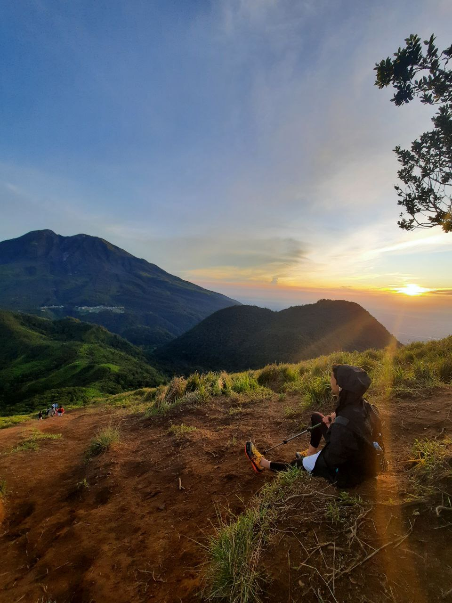
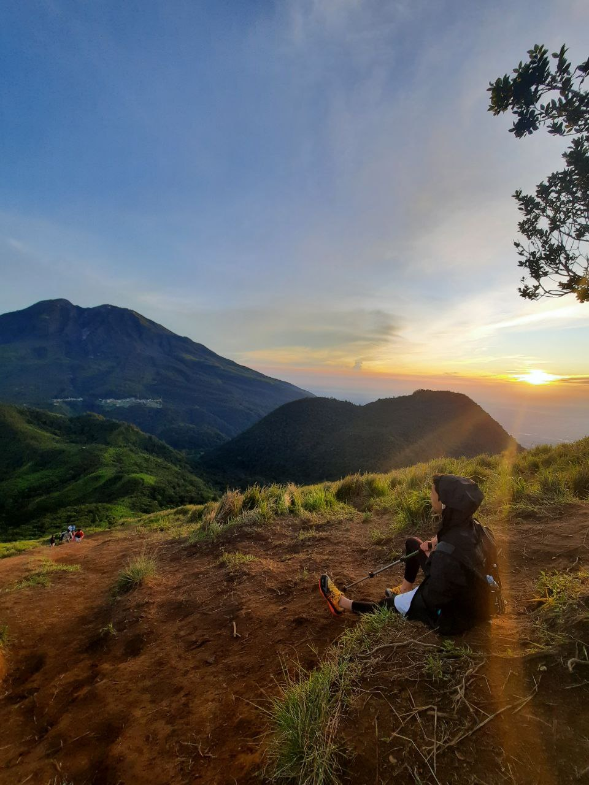

Nama : irfan akmal hakim
Ttl : Pekanbaru, 1 MAret 2004
Saya mempunyai beberapa hobi yang saya sukai dan di semuanya memiliki kenangan tersendiri dan cerita tersendiri, seperti hobi memelihara hewan khususnya ayam ,saya menyukainya karena ayah saya selalu cerita , curhat ,berbagi pengalaman itu semuanya dilakakan ketika kami sedang mengurus ayam atau sedang memegang ayam, dan ini adalah salah satu hobi yang saya sukai.
Saya mempunyai beberapa cita-cita yang ingin saya capai diantaranya adalah menjadi seorang penuntut ilmu,karena dengan menuntut ilmu kita akan menjadi orang yang bermanfaat bagi orang lain ,dan menjadi orang yang berilmu itu lebih baik dari pada menjadi orang yang kaya.
whatsapp : 0813-2071-7284
telegram : irfan akmal hakim
instagram : @irfan__aal
email : kreakxdeh12@gmail.com